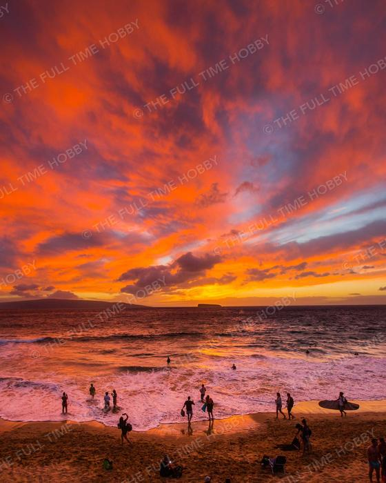
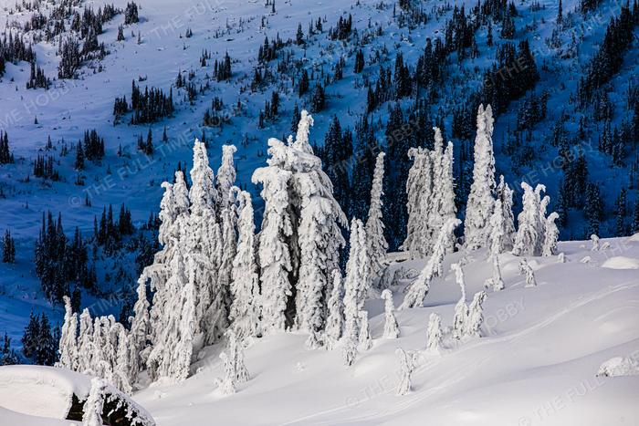
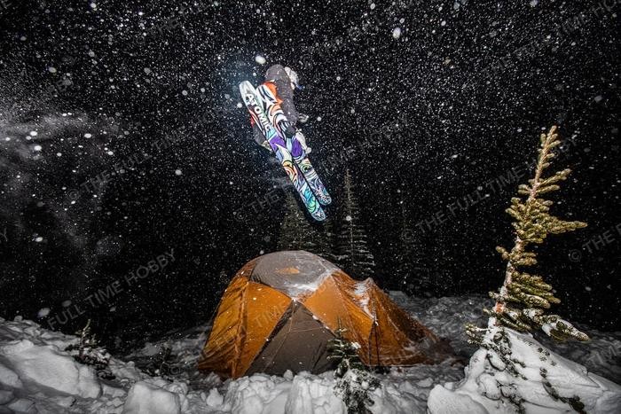
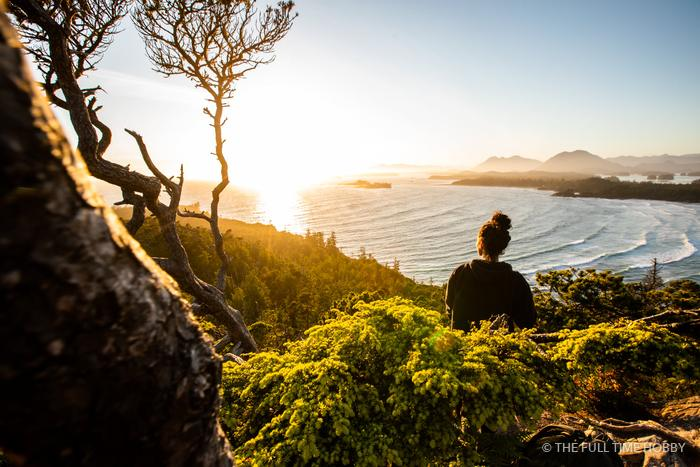

Stock Photography • Sea to Sky • British Columbia
Stock Photos of Squamish, Whistler & BC
Mountains, glaciers, backcountry skiing, mountain biking, northern lights and West Coast light, licensed direct from the photographer. No subscriptions or middleman fees. Pick a photo, tell me how you'll use it, and I'll send the full-resolution file with your license.
How Licensing Works










